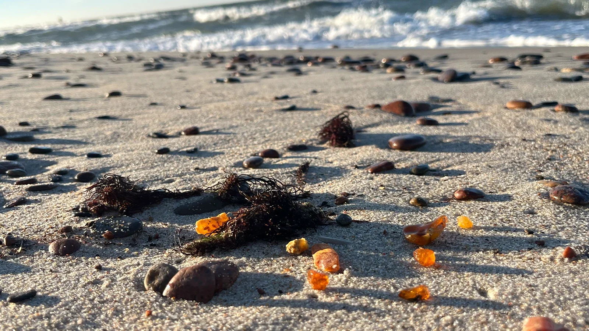
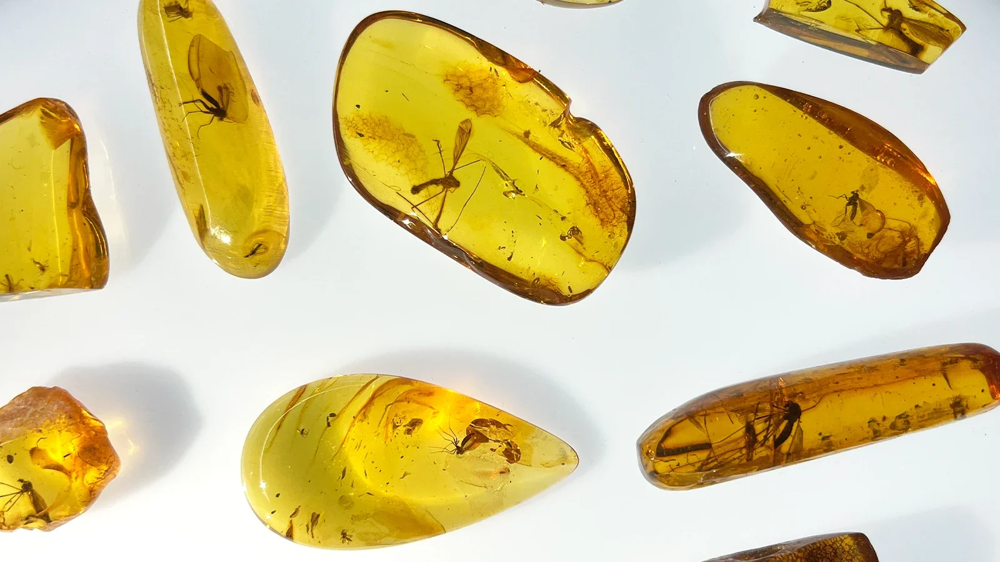
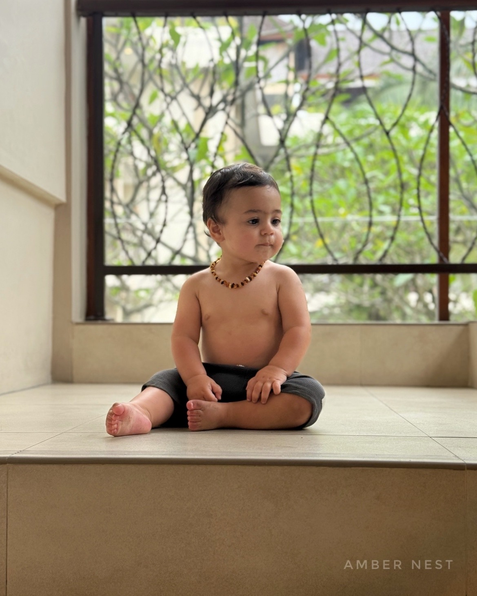

The Story of Baltic Amber
Millions of years in the making.

From ancient forests to the Baltic coast
Long before Baltic amber became something we could hold in our hands, it began as resin produced by ancient trees. Over millions of years, some of this resin was buried beneath layers of earth and sediment and slowly transformed into amber.
Large deposits are found around the Baltic Sea, giving Baltic amber its name and its long connection with Northern Europe.

A glimpse into an ancient world
Amber is not a stone — it is fossilized tree resin. Sometimes the sticky resin trapped tiny pieces of plants or small insects before it hardened, preserving a remarkable glimpse of ancient ecosystems.
Because amber is a natural material, every piece can vary in color, transparency, texture and shape.

Our Story
I’m Angela, the mama behind Amber Nest.
My connection with Baltic amber began years ago, while working with children in London. I cared for little ones who wore amber necklaces and others who didn’t, and I saw firsthand the difference they seemed to make during teething.
I never forgot it.
Years later, when I became a mama, an amber necklace was one of the first things I chose for my little boy.
But finding genuine Baltic amber in Israel wasn’t as easy as I expected. And somewhere between searching for the right pieces and wanting to share something I had believed in for years, Amber Nest was born.
Genuine Baltic amber from Lithuania, carefully chosen for little ones.
It started with mine. Now I get to share it with yours.